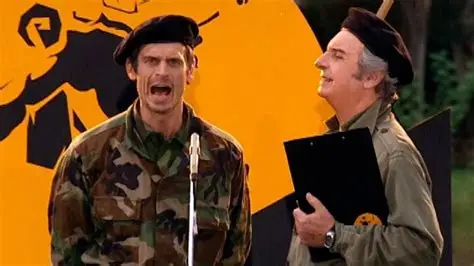

Betún y Fatiga eran hermanos
Betún, el perro de Lamponne, tenía un curioso vínculo con otra famosa mascota de la televisión argentina: Violeta, la perra que interpretaba a Fatiga en Casados con hijos.

Betún, el perro de Lamponne, tenía un curioso vínculo con otra famosa mascota de la televisión argentina: Violeta, la perra que interpretaba a Fatiga en Casados con hijos.
En uno de los episodios aparece una vaca cruzando la Avenida 9 de Julio. Originalmente la producción había pensado utilizar un oso, pero finalmente descartó la idea.
Peretti tiene fobia a los caballos y durante el episodio ambientado en una cancha de polo evitó acercarse a ellos. Algunas escenas fueron realizadas por jugadores profesionales.

El actor elegido originalmente para interpretar a Franco Milazzo abandonó la producción durante las grabaciones. Finalmente, César Vianco asumió el personaje.
Durante la grabación del primer episodio se produjo una explosión al cortar accidentalmente uno de los cables. El incidente terminó dejando sin electricidad a todo el barrio.
Damián Szifrón tomó nombres de personas que conoció durante su vida para bautizar a varios personajes, incluyendo a los cuatro integrantes del equipo.
Jorge D'Elía, quien interpreta a José Feller, es el padre de Federico D'Elía, el actor que interpreta a Mario Santos. Ambos forman parte de la misma historia.
Federico D'Elía, Alejandro Fiore, Diego Peretti y Martín Seefeld ya se habían cruzado profesionalmente antes de Los Simuladores, en la serie Poliladron.
Antes de consolidarse como actor, Diego Peretti se formó y ejerció como médico psiquiatra. Su profesión incluso aparece mencionada en varias entrevistas sobre su carrera.
El éxito de la producción argentina llevó a realizar adaptaciones en Chile, España, México y Rusia. La versión española tuvo además a Federico D'Elía nuevamente como Santos.
La serie recibió el Martín Fierro de Oro correspondiente a 2002, además de otros premios Martín Fierro durante su recorrido televisivo.
Cuando el equipo recibe un llamado de Santos, sus celulares reproducen la música característica de la serie: Cité Tango, basada en una composición de Astor Piazzolla e interpretada por Gotan Project.
Durante la filmación de Fuera de cálculo, algunas personas creyeron que el robo al banco estaba ocurriendo realmente y llegaron móviles policiales al lugar de rodaje.
Los Simuladores comenzaron a emitirse en Argentina en 2002, en medio de una fuerte crisis económica y social. La serie terminó convirtiéndose en uno de los grandes éxitos de la televisión argentina de comienzos de los 2000.
El regreso cinematográfico fue anunciado en 2022, pero después de varias postergaciones el proyecto fue cancelado. Federico D'Elía confirmó públicamente la caída del proyecto en septiembre de 2025.